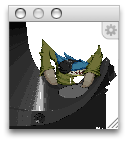

Working with the preview window
Since pixel art almost always means being zoomed in very far on an image, it's easy to miss the forest for the trees. Pixen provides a convenient method for you to see your document at its actual size (or another factor) while you work in high-detail:

To open the preview window:
Click the Preview item in a document's toolbar.
or
Use the Window > Preview menu item.
By default, the preview window opens to 100% of the document's size, but it bounds to 256x256 to keep the window from getting out of control on larger documents.
To make the preview bigger, simply resize the window, and the image inside will resize along with it; a zoom percentage indicator will appeaer as you resize the window. Holding shift while sizing will lock the zoom factor to integers.
See that little gear bezel in the upper right? It provides all the functionality for the preview window with a simple click. You can read more about what it can do in the other preview pages:
See also
Sizing the preview window to a specific percentage
Restoring the preview window to the actual size of the document
Preview Topics